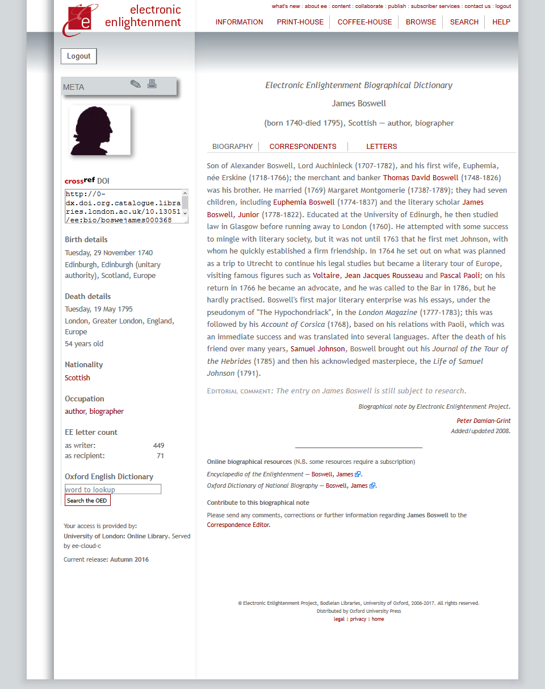
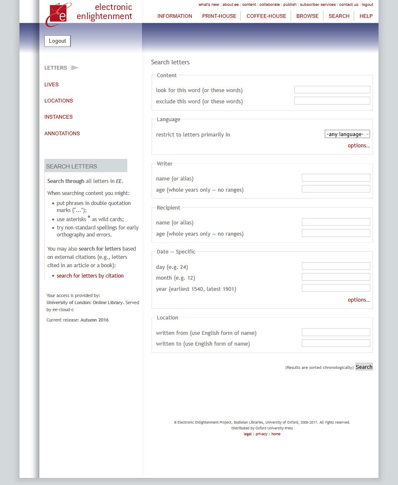
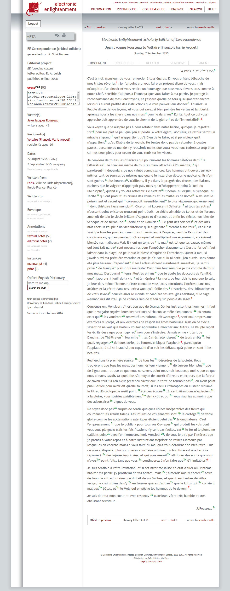

Electronic Enlightenment Scholarly Edition of Correspondence
Table of Contents
Abstract
The Electronic Enlightenment Scholarly Edition of Correspondence (EE), under the directorship of Robert McNamee and made available on a subscription basis by Oxford University Press, is a text collection of over 70,000 individual letters (written between participants of the ‘republic of letters’), biographical details of contributors, and additional contextual information. This review offers an overview of the collection (or, perhaps more accurately, collections) and its technical presentation, and some brief reflections on the benefits and limitations of the database (and others of its sort) within the realm of digital text collections and digital scholarship generally.
Electronic Enlightenment Scholarly Edition of Correspondence
For the historian, private (and not so private) letters are an invaluable resource, albeit one which can be difficult to work with. Beyond the practicality of finding sources held amongst diverse and distant archives, access is often restricted to items which are also historical artefacts. Even as published collections they are often too expensive or specialist for libraries to justify purchasing, and unwieldy for researchers to interrogate with precision. Rousseau’s Correspondance complète, for example, is 52 volumes and over twenty thousand pages. The Electronic Enlightenment Scholarly Edition of Correspondence (generally referred to as Electronic Enlightenment, or simply EE) is an online collection of edited historical correspondences which overcomes these issues (http://www.e-enlightenment.com).
EE is an Oxford University Press subscription based digital collection managed by the Bodleian Library. The architect and project director is Robert McNamee and the technical editor is Mark Rogerson. It was initially supported with funding from the Andrew W. Mellon Foundation, with further support from the Florence Gould Foundation and the Voltaire Foundation. While it does not appear to have a specific mission statement, it does enumerate its perceived strengths: to be, unlike archives and libraries, always open and accessible; to be a work-in-progress which continues to expand its content and contextual details; to be ‘next-generation’ digital, ‘a database-driven site [which] allows more complex searches & growing functionality’; to contain scholarly content by choosing source material which has been ‘researched, verified & expanded’; and to be comprehensive.1
Details of the collection
After ten years of preparation, the collection was made available in August 2008. The ‘founding corpus’ is made up of 61 printed collections of correspondences from 19 different academic presses – those considered to be the best critical editions, rather than (as is often the case) the easiest to obtain.2 These collections continue to be supplemented as new letters emerge, and new collections are added annually – be they sourced from published print editions, or born digital editions created specifically for EE.3 All sub-corpora are treated equally within the database and are integrated seamlessly by making each letter, regardless of source, its own entry within the database. At the same time, all individual letters explicitly credit and offer references to the source corpus (printed and/or digital). The original annotations from the printed editions are carried over, and presented separately from any which may have been added by EE. The collection’s fact sheet notes that they hold letters from 8,560 correspondents, from 53 nationalities, covering 11 languages, and 777 occupations. There are currently letters ranging from the early seventeenth (1609) to early twentieth (1900) century, covering Africa, the Americas, Asia, Europe, and even one letter written on a ship crossing the Atlantic.4 There are 70,057 individual letters and documents (keyed, rather than digitized via OCR, with further corrections regularly made), information on 64,741 manuscripts and 106,933 early edition sources are linked to individual letters. In total there are 319,778 scholarly annotations, 1,476 links to and from the Oxford Dictionary of National Biography, and external links to over 50 other online resources.5 It should be noted that these documents, and related information (such as metadata), are not exportable, and access is only possible via the web interface (as HTML documents – although there is a print function).
Correspondents are those who could be considered, in the broadest sense of the term, participants in the ‘republic of letters’ – as EE notes: ‘the ideas and concerns not only of thinkers and scholars, politicians and diplomats, but also butchers and housewives, servants and shopkeepers’ are represented. And while the former categories are certainly represented more than the latter, there is a respectable spread – for example, while roughly 10% (77) of the correspondents are considered to be philosophers, 44 servants are also included – although one would suspect they were mostly recipients rather than authors, and in terms of total letters the two are incomparable.6 This, however, is not a flaw with EE. The historical facts and details which emerge through letters are not the only, or even primary, subject of interest. Instead, the ideas being discussed are key.7 Oxford University classifies the database’s subject areas as English Language, Literature, History, and Philosophy, and topics, by EE’s own description, cover ‘everything from religious tolerance to animal rights, vulcanology to classical archeology, economic modelling to celebrity culture.’8 This subject material means authors covered have largely been from the European and North American context, writing in the early modern era.9 However, this is not a goal, and EE aims to expand both chronologically and geographically.

Interface and Search


The text of the letter is presented to the right of the METABAR. The digital copy, as noted, is keyed, and no facsimiles are included (although illustrations are included when available). At the top of the letter are tabs linking to any information on additional items enclosed with the letter; links to documents related to the letter; links to different versions and translations of the letter;11 and links to the parent letter (if, for example, one is looking at a translation). The annotations can occasionally be overwhelming (see attached screenshot), and this can make text copied from the webpage to a document messy.
With regard to the underlying data model, there is no information provided. This is a shame as documentation covering these areas would offer insights into the methodological standards used, and go some way to enhancing it as an ideal digital source collection. Similarly, when it comes to interoperability between EE and other platforms or databases, there is no reference to OAI-PMH, REST, or the development of its own API. There is work being done on MARC records for individual letters, but it is unclear what the availability of these records will be when complete.12
Reflections
Within the broader realm of digital text collections one may note, with qualification, that EE can be improved in some ways. Emphasis is, for obvious reasons, placed on simplifying access to the key collection. As a result, additional resources come across as scattered, and as a secondary consideration at times. With regard to searching, there is room for more complex functions (for example, some method of automated approximate string matching, variants, or metaphone searches). This is particularly relevant for a collection which contains historical spelling variations. Additionally, language and translation tools, such as bilingual dictionaries, would be very welcome. With regard to browsing, a simple one-click method of bringing up exchanges between two authors would also be welcome (perhaps included in the ‘related’ tab).13 Similarly, contextual linking between letters (for example, between mentioned authors or places) would be a potentially useful addition. Finally, although clearly beyond the remit of EE, facsimiles of original letters would be of interest to some researchers.
With regard to digital scholarship and methodological reflections more generally, it is worth noting that there is a divide developing between traditional scholarship and more forward-thinking digital engagements – a ‘quantitative shift’ in which traditionally qualitative texts are being taken, transformed, and treated as data so as to extract information from documents which is otherwise too labour intensive, or even undetectable.14 As Bullard has noted: ‘the most successful resources of recent years have been analytical in function, using database software to present texts that are too information-rich to be readable in any straightforward way, such as diaries, registers, library catalogues, or serials’ (Bullard 2013, 749). EE is not unaware of these possibilities, as made obvious by some of the ongoing projects it has partnered itself with, such as ‘Identifying intertextual relationships in large-scale digital text collections,’ ‘Topic modelling through latent Dirichlet allocation (LDA),’ and Stanford’s ‘Mapping the Republic of Letters.’15 However, it does not go as far as some may hope. While it improves access, this access is limited – for average users – to viewing letters as HTML files via the web interface. It is not possible to extract or download collections of letters or metadata (without resorting to scrapping). This makes questions around text encoding and formatting inconsequential, and limits the ability to perform any type of quantitative analysis of the data – both on-the-fly and offline. Thus, EE, in an interesting way, straddles this quantitative shift. The content it provides is traditional, yet digitally augmented; scholarly edited and annotated collections of niche information, which have been meticulously edited, contextual information added, and made easy to find and read.16 Therefore, if we think of digital text collections as doing two things – providing access to data, and allowing users to create meaning from that data via emerging digital methods – EE does the former incredibly well, but it does not provide, or at least, does not easily provide, users access to the data which would allow them to engage in the latter.
It should be noted, however, that these limitations may be due to the sources used to build the collection. That is to say, any lack of access to raw data is likely to be a result of licensing agreements made by EE to gain access to high-quality sources, and/or the need to keep data behind a paywall to continue the projects expansion – both of which are qualities which are essential to making it the valuable resource which it is. Nonetheless, from the user’s perspective, there is gatekeeping taking place.
To conclude, as a standalone platform and historical archive, EE is an invaluable resource to scholars working on the many authors, topics, and eras covered – it is a primary source collection of exceptional scholarly quality. It is a robust, and ever growing, collection, with impressive annotations, supplemental contextual information, and metadata. While contributions to the digital-end of digital scholarship are limited, this may be, as noted, a result of the collection’s source material. On the whole, it is an exciting and valuable resource that will continue to make positive contributions to scholarship in the areas it covers.
Bibliography
- Bullard, Paddy. 2013. “Digital Humanities and Electronic Resources in the Long Eighteenth Century”. Literature Compass 10: 748–760. doi:10.1111/lic3.12085.
- Robert McNamee et al. (ed.). 2008-2017. Electronic Enlightenment Scholarly Edition of Correspondence, Oxford: Oxford University Press, https://web.archive.org/web/20170827083728/http://www.e-enlightenment.com//.
- Evrigenis, Ioannis D. 2015. “Digital Tools and the History of Political Thought: The Case of Jean Bodin”. Redescriptions: Political Thought, Conceptual History and Feminist Theory 18: 181-201. doi:10.7227/R.18.2.4.
- Grimmer, Justin and Brandon M. Stewart. 2013. “Text as Data: The Promise and Pitfalls of Automatic Content Analysis Methods for Political Texts”. Political Analysis 21: 267-297. doi:10.1093/pan/mps028.
- Hill, Mark J. 2017. “Invisible interpretations: reflections on the digital humanities and intellectual history”. Global Intellectual History 1: 130-150.
- Ralph A. Leigh (ed.). 1965–1998. Correspondance complète de Jean Jacques Rousseau, 52 vols. (Geneva, Madison, Banbury, Oxford: Voltaire Foundation).
Notes
- http://web.archive.org/web/20170405134746/http://www.e-enlightenment.com/info/about/ee_facts/coolstuff.html. ↑
- EE notes that its collection has been built upon a ‘wish-list’ of ‘key’ items which was decided upon by the editors. Thus, while there are no specific editorial criteria listed for inclusion, the fact that the collection is curated by experts is a strength. In addition, the editors note that they remain open to further contributions. ↑
- A list of the sub-corpora which make up EE can be found at: http://web.archive.org/web/20170405135445/http://www.e-enlightenment.com/coffeehouse/project/editions.html. ↑
- Alexander Mackenzie, "Alexander Mackenzie to Roderic Mackenzie: Wednesday, 30 October 1799”, (Robert McNamee et al.: 2008-2017). ↑
- http://web.archive.org/web/20170405140442/http://www.e-enlightenment.com/info/about/ee_facts/. ↑
- http://web.archive.org/web/20170405140623/http://www.e-enlightenment.com/info/about/. ↑
- In this way EE distinguishes itself from many other resources (such as those catalogued by Early Modern Letters Online. http://emlo.bodleian.ox.ac.uk/. ↑
- http://web.archive.org/web/20170405140949/http://www.e-enlightenment.com/. ↑
- Of the 45,195 letters which have their locations linked, 42,782 are from Europe, 1,919 from North and Central America, 453 from Asia, 35 from Africa, 5 from South America, and 1 (as noted previously) from the Atlantic Ocean (https://web.archive.org/web/20170505090908/http://0-www.e-enlightenment.com/location/). ↑
- http://web.archive.org/web/20170405144259/http://www.e-enlightenment.com/letterbook/. ↑
- There is a translation project attached to EE which appears to have three methods of obtaining translations: making use of already existing translations when available; working with individual scholars willing to provide translations; and working with graduate translation programmes (in particular, the University of Wisconsin, Milwaukee). This aspect of the project is noted as being ‘modest,’ and there have been no updates since winter 2014. ↑
- http://web.archive.org/web/20170405150419/http://www.e-enlightenment.com/info/librarians/marc/. ↑
- One may expect the ‘next letter’ link to do this, but the function of this link depends on the method used to access the current letter (i.e., by search results, or as dictated by the category one is browsing). While it is possible to bring up the entirety of correspondences between two authors, the method this reviewer has come to use requires finding a letter by an individual of interest, clicking on the author or recipient in the METABAR, clicking on the ‘correspondents’ tab, finding the intended author within the resulting list (which, in some cases, is hundreds of entries long, presented in groupings of fifteen individuals per page), and then clicking an icon of a hand holding a quill. This is a welcome feature, but cumbersome. ↑
- For one introduction to these ideas see Grimmer and Stewart’s “Text as Data: The Promise and Pitfalls of Automatic Content Analysis Methods for Political Texts.” For reflections on these issues with regard to history see Mark J. Hill’s “Invisible Interpretations: reflections on the digital humanities and intellectual history”. ↑
- See http://web.archive.org/web/20170405151401/http://www.e-enlightenment.com/coffeehouse/project/intertextual/, http://web.archive.org/web/20170405151453/http://www.e-enlightenment.com/coffeehouse/project/ldatopics/, and http://republicofletters.stanford.edu/. ↑
- Evrigenis’ “Digital Tools and the History of Political Thought: The Case of Jean Bodin” offers some clear reflections on the potential of digital editions, with particular reference to the history of political thought, of which EE may be seen as a good example. ↑
@article{ee,
author = {Hill, Mark J.},
title = {Electronic Enlightenment Scholarly Edition of Correspondence},
journal = {RIDE – A review journal for digital editions and resources},
number = {6},
year = {2017},
doi = {10.18716/ride.a.6.7},
url = {https://doi.org/10.18716/ride.a.6.7},
}TY - JOUR
AU - Hill, Mark J.
TI - Electronic Enlightenment Scholarly Edition of Correspondence
T2 - RIDE – A review journal for digital editions and resources
IS - 6
PY - 2017
DA - 2017/09
DO - 10.18716/ride.a.6.7
UR - https://doi.org/10.18716/ride.a.6.7
PB - Institut für Dokumentologie und Editorik e.V.
LA - en
ER - Hill, M. J. (2017). Electronic Enlightenment Scholarly Edition of Correspondence. RIDE – A review journal for digital editions and resources, (6). https://doi.org/10.18716/ride.a.6.7Hill, Mark J.. "Electronic Enlightenment Scholarly Edition of Correspondence." RIDE – A review journal for digital editions and resources, no. 6, 2017. https://doi.org/10.18716/ride.a.6.7.Hill, Mark J.. "Electronic Enlightenment Scholarly Edition of Correspondence." RIDE – A review journal for digital editions and resources, no. 6 (2017). https://doi.org/10.18716/ride.a.6.7.